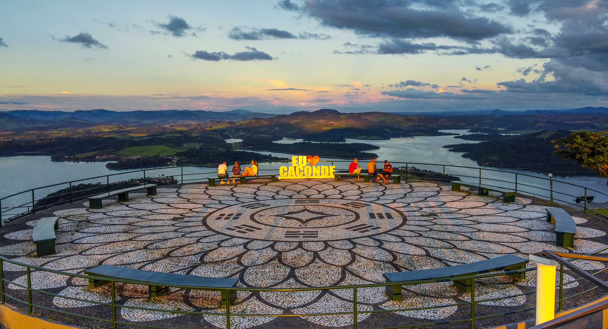
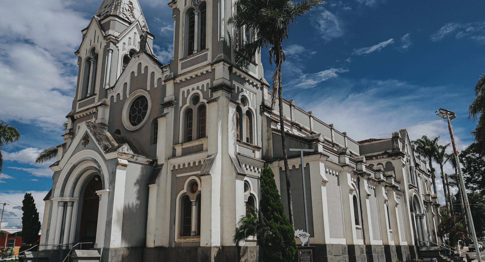
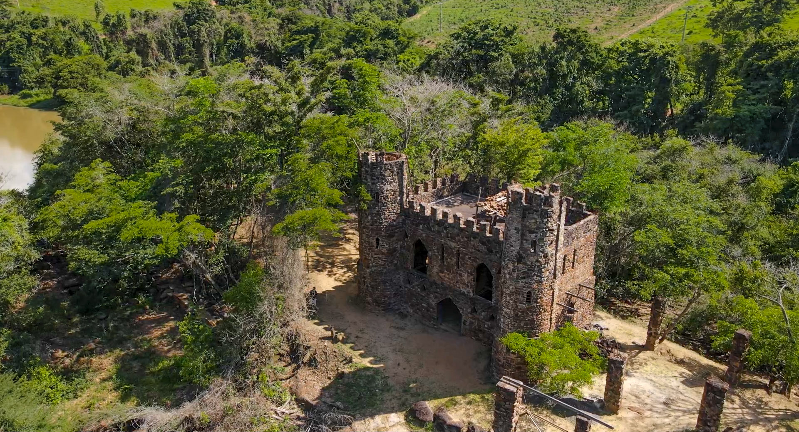
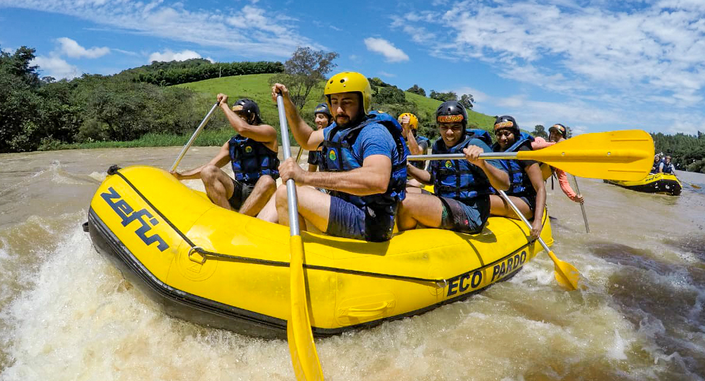
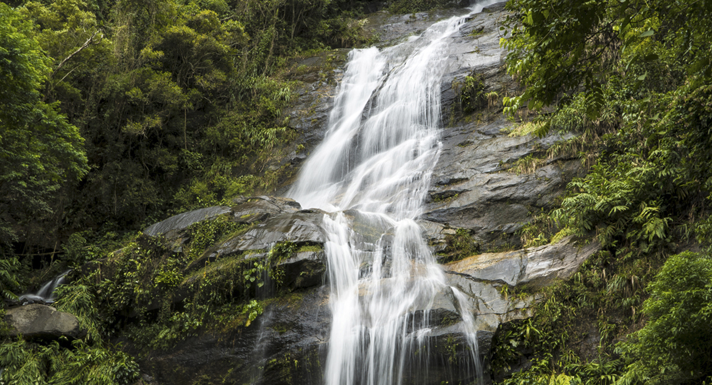
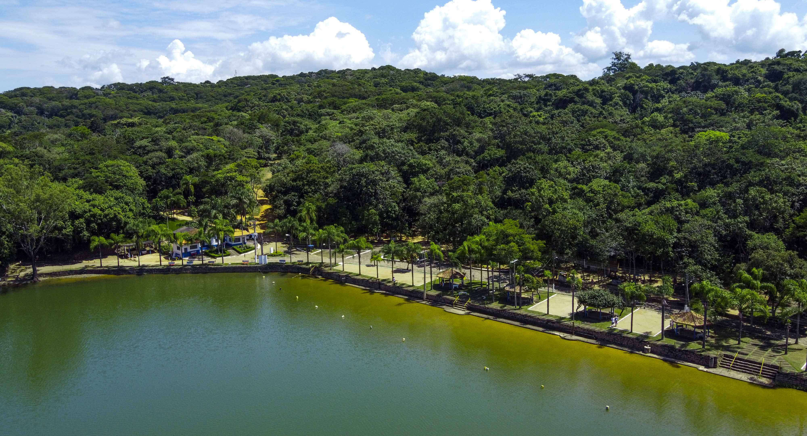

Mirante Caconde
Distante 14 km do centro de Caconde, com acesso por rodovia e estrada pavimentada, o mirante é um dos cartões-postais mais belos da cidade. Com altitude de aproximadamente 1.195 metros, o local proporciona uma vista panorâmica de 360 graus da represa, das montanhas cobertas por plantações de café, áreas rurais, vilarejos e cidades vizinhas.
A praça possui elementos inspirados no misticismo e na contemplação. Na entrada do estacionamento encontra-se o portal “11:11”. A área ajardinada apresenta formato de trevo de quatro folhas, simbolizando sorte aos visitantes. No centro, há uma estrutura elevada em pedra com o desenho de uma flor de lótus de mil pétalas.
O espaço também conta com uma pirâmide inspirada no estilo Quéops do Egito, construída em estrutura metálica vazada, contendo ao centro uma pirâmide de pedra em estilo Maia, além de uma estrela vazada de seis pontas. Esses elementos criam um ambiente de contemplação, curiosidade e conexão com a natureza.
O mirante é considerado um local ideal para relaxamento, meditação, apreciação da paisagem e contato com a tranquilidade natural da região.

Igreja Matriz
A Basílica Santuário de Nossa Senhora da Conceição do Bom Sucesso é um importante ponto religioso e turístico da cidade de Caconde. Pertencente à Diocese de São João da Boa Vista – SP, a basílica atrai fiéis, moradores, peregrinos e visitantes devido às celebrações religiosas e à sua bela arquitetura em estilo neorromânico.
O interior do santuário possui imagens sacras e pinturas a óleo em estilo clássico, produzidas pelo artista plástico cacondense Edmundo Migliaccio. Em 12 de agosto de 2008, o santuário recebeu do Papa Bento XVI o título de Basílica Menor, tornando-se um importante símbolo da religiosidade da região.
Além da basílica, o município conta com diversas capelas urbanas e rurais, demonstrando a forte tradição religiosa e a valorização das comunidades rurais presentes em Caconde.

Castelo Scravoni
O Castelo Medieval de Caconde é um dos atrativos turísticos mais curiosos e visitados da região. Construído inteiramente em pedras e localizado em meio à natureza, o castelo chama a atenção pela arquitetura inspirada no estilo medieval europeu.
O local é bastante procurado por turistas e fotógrafos para visitas e ensaios fotográficos. Para chegar até o castelo, os visitantes podem seguir de carro até determinado ponto e, em seguida, realizar uma caminhada de aproximadamente 800 metros por uma trilha em meio à mata.
Situado a cerca de 7 km do centro de Caconde, o passeio proporciona contato direto com a natureza e belas paisagens. As visitas devem ser agendadas previamente com o proprietário do local.

Ecopardo
A EcoPardo Turismo e Aventura foi fundada em 1998 por um grupo de jovens aventureiros que transformaram a paixão pela natureza e pela diversão em profissão. A empresa tornou-se referência local no turismo de aventura, oferecendo atividades como rafting, rapel, trilhas, passeio de caiaque e cascading.
Reconhecida pelo pioneirismo na região, a EcoPardo destaca-se pela valorização do trabalho em equipe e pelo ambiente familiar entre seus colaboradores. Além disso, a empresa busca desenvolver suas atividades de forma sustentável, promovendo a preservação do meio ambiente e o contato responsável com a natureza.
Com belas paisagens naturais e atividades radicais, a EcoPardo atrai turistas de diversas regiões para experiências de aventura em meio às riquezas naturais de Caconde.

Cachoeira Lafaiete
A Cachoeira da Usina é um dos atrativos naturais mais belos da região, cercada por mata nativa e paisagens exuberantes. O acesso ao local pode ser realizado por estrada de terra ou por embarcação através da represa.
A cachoeira possui uma queda d’água de aproximadamente 25 metros de altura, desaguando diretamente na represa e formando um cenário ideal para contemplação da natureza e lazer.
O local também conta com restaurante, oferecendo porções de tilápia, traíra, lambari, batata frita, mandioca frita, salada orgânica, ceviche, sashimi, arroz e bebidas. O atendimento acontece aos sábados, domingos e feriados, das 10h às 17h.
A propriedade é particular e muito procurada por visitantes que desejam aproveitar a tranquilidade e as belezas naturais de Caconde.

Parque Prainha
O Parque Prainha é um dos principais espaços de lazer de Caconde, atraindo moradores e turistas pela ampla área verde localizada às margens da Represa de Caconde.
A represa permite a prática de esportes náuticos, atividades aquáticas e pesca. O parque conta com praça ajardinada, bosque de mata nativa, trilhas e caminhos ideais para caminhadas, corridas e passeios de bicicleta.
O local oferece estrutura completa para camping, além de bar, lanchonete, sanitários, quadra de areia, espaço kids, estacionamento para veículos e rampa para embarque e desembarque de embarcações.
O funcionamento ocorre de segunda a sexta-feira, das 8h às 17h, e aos sábados e domingos, das 8h às 18h.